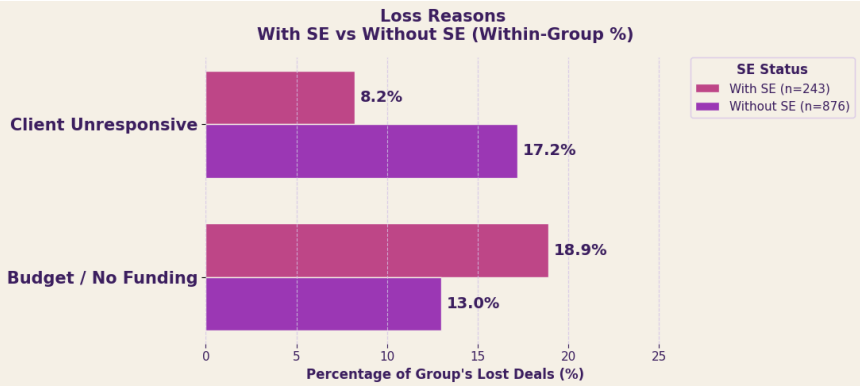
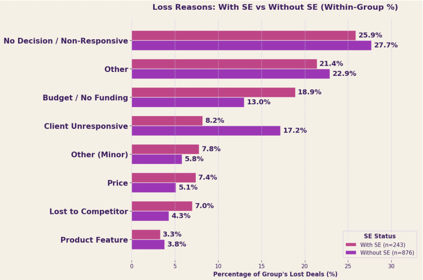
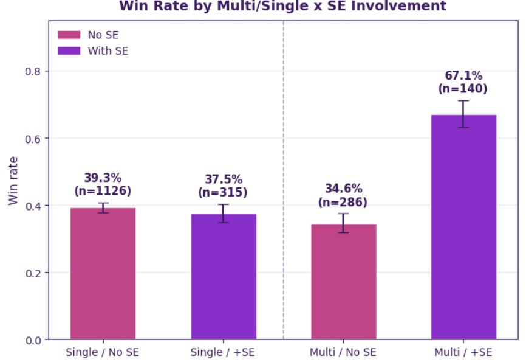
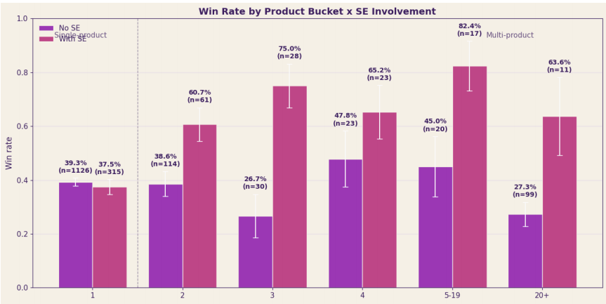
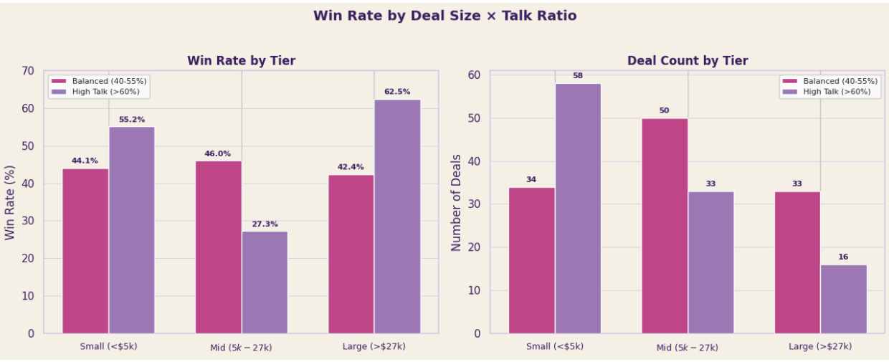
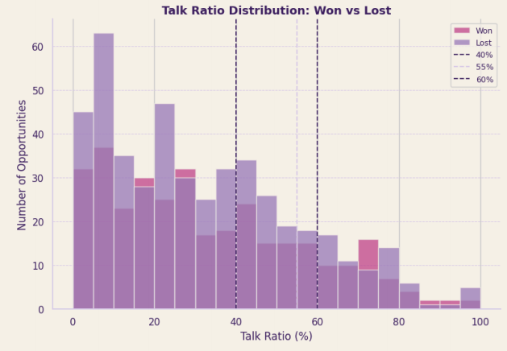
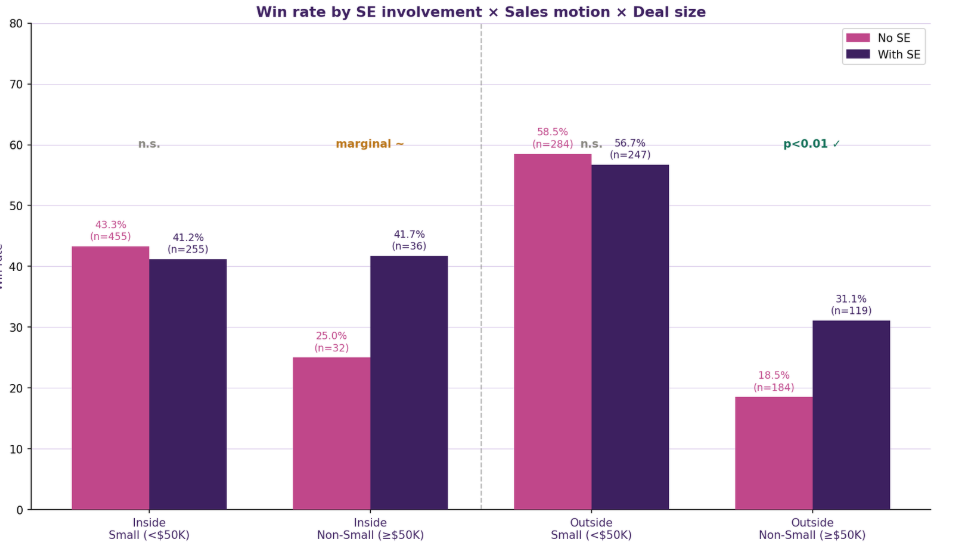
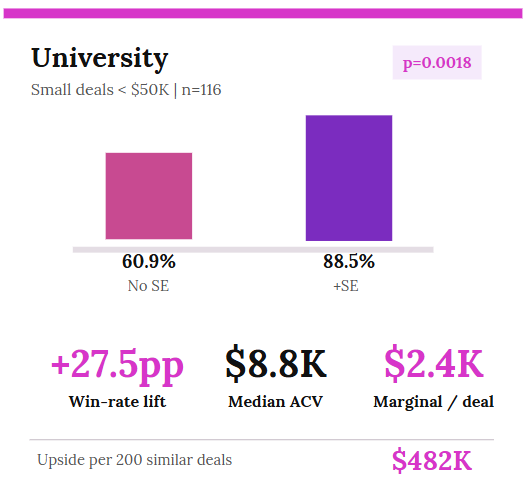
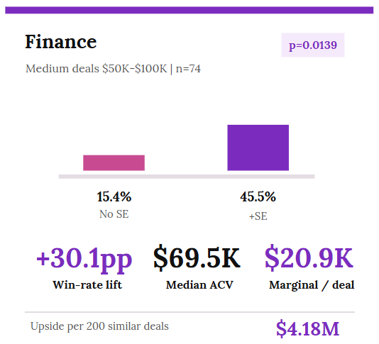

Maximizing Sales Engineering Performance
Overview
The Sales Engineering (SE) team at one of the nation’s largest PropTech companies closes deals worth 4× more than deals without SE coverage — yet leadership had no data to prove it. SE contribution was invisible in the CRM: no way to tie SE activity to win rates, deal velocity, or revenue outcomes.
Our mission: quantify SE’s true impact, identify the behavioral drivers of deal success, and deliver a scoring tool SE leadership can use to prioritize where to focus.
| Program | UCI Paul Merage MSBA Capstone · Jan 2026 – June 2026 |
| My Role | Analysis Lead |
Data
Two systems, joined by a single key.
| Source | Scale | What It Captures |
|---|---|---|
| Salesforce | 6,039 opportunities · 61 fields | Deal outcomes, ACV, SE assignment, stage progression |
| Gong | 43,000 calls · 13 tables | Talk ratios, call cadence, conversation engagement |
| Matched Dataset | 802 deals with full coverage | Every deal with both outcome AND behavioral signal |
Salesforce tells us what happened. Gong tells us how. OppId is the bridge.
Five Hypotheses Tested
H1 — SE Reshapes Why Deals Are Lost
χ² = 20.99, p = 0.0038 · Reject H₀
SE involvement doesn’t just affect win rates — it changes the composition of losses. Deals with SE are 9 percentage points less likely to end in “Client Unresponsive,” but become more prone to stalling on budget.
| Loss Reason | With SE | Without SE | Δ |
|---|---|---|---|
| Budget / No Funding | 18.9% | 13.0% | +5.9% |
| Client Unresponsive | 8.2% | 17.2% | −9.0% |
| Lost to Competitor | 7.0% | 4.3% | +2.7% |
Recommendation: Before assigning an SE to a complex deal, validate budget availability and decision-making authority. SE time is wasted on deals that will fail for financial reasons a rep could screen out earlier.


H2 — SE Multiplies Multi-Product Deals
Interaction OR = 3.569, p < 0.0001 · Reject H₀
SE has no measurable effect on single-product deals (p = 0.61) — but nearly doubles the win rate on multi-product deals.
| Segment | No SE | With SE | Lift |
|---|---|---|---|
| Single-product | 39.3% | 37.5% | Not significant |
| Multi-product | 34.6% | 67.1% | +32.5 pp |
Sweet spot: 4-product bundles carry the highest median ACV ($32K). Beyond 20 products, complexity erodes both win rate and ACV.
Recommendation: Route SE capacity to multi-product opportunities — that’s where SE effort produces measurable ROI.


H3 — Talk Ratio: Precision Matters More Than Direction
z = 1.72, p = 0.043 (mid-tier) · Conditional Reject H₀
SEs at this company speak only 29% of call time on average — far below Gong’s 40–55% optimal range. Across all deals, talk ratio shows no significant effect (p = 0.69). But segment by deal size, and a 20-point gap emerges in mid-tier deals.
| Deal Tier | Balanced (40–55%) | High Talk (>60%) | Δ |
|---|---|---|---|
| Small (<$5K) | 44.1% | 55.2% | — |
| Mid ($5K–$27K) | 46.0% | 27.3% | +18.7 pp |
| Large (>$27K) | 42.4% | 62.5% | — |
Recommendation: For mid-complexity deals, coach SEs toward a 40–55% talk ratio. That’s the only tier where the behavior change produces statistically significant, measurable ROI.


H4 — Outside Sales Win Rate Collapses Above $50K
p = 0.0057 · Reject H₀
Outside sales reps outperform inside sales on small deals — but their win rate halves once deals exceed $50K without technical SE support.
| Channel | ≤ $50K | > $50K |
|---|---|---|
| Inside Sales | 42.5% | 33.8% |
| Outside Sales | 57.6% | 23.4% |
SE adds +12.6 percentage points and +$3,019 per deal on outside deals ≥ $50K. Currently 184 of these high-value deals had no SE coverage — representing ~$555K in untapped incremental ACV.
Recommendation: In Salesforce, trigger automatic SE assignment at first touch for Outside Sales + ACV ≥ $50K.

H5 — Faster Conversation Cadence Consistently Predicts Winning
Monotonic decline significant · Reject H₀
Win rate falls steadily as the gap between conversations widens — from 63% on deals with calls every 10 days, down to 28% for deals with 80+ day gaps. SE involvement raises the baseline by +10 to +24 percentage points at every cadence level, but the velocity slope is identical whether or not SE is involved (interaction p = 0.173, n.s.).
| Avg Gap Between Calls | Win Rate |
|---|---|
| 0–10 days | 63% (n = 49) |
| 10–20 days | 56% (n = 61) |
| 20–40 days | 48% (n = 86) |
| 40–80 days | 43% (n = 65) |
| 80+ days | 28% (n = 47) |
Recommendation: SE cannot compensate for slow follow-up. Regardless of SE coverage, target follow-ups within 0–30 days.
Bonus Finding: SE ROI Is Segment-Specific
The same ~+28 pp win-rate lift from SE coverage produces dramatically different revenue outcomes across industries.
| Segment | SE Win Lift | Median ACV | Marginal $/deal | Upside per 200 deals |
|---|---|---|---|---|
| University (<$50K) | +27.5 pp (p = 0.002) | $8.8K | $2.4K | $482K |
| Finance ($50K–$100K) | +30.1 pp (p = 0.014) | $69.5K | $20.9K | $4.18M |
SE coverage should not be one-size-fits-all: Finance/mid-market delivers 9× the revenue upside per SE hour versus small/university deals.


Deliverable: Win-Probability Scoring Tool
We translated all five hypotheses into an interactive Sales Intelligence dashboard — a step-by-step calculator SE leadership can use to score any deal in the pipeline in real time.
Inputs: Product count · SE assigned · Engagement cadence · Sales channel · Talk ratio
Output: Predicted win probability with full math trace — every percentage point traces back to a specific hypothesis finding.
From blind spot to decision — in one view.